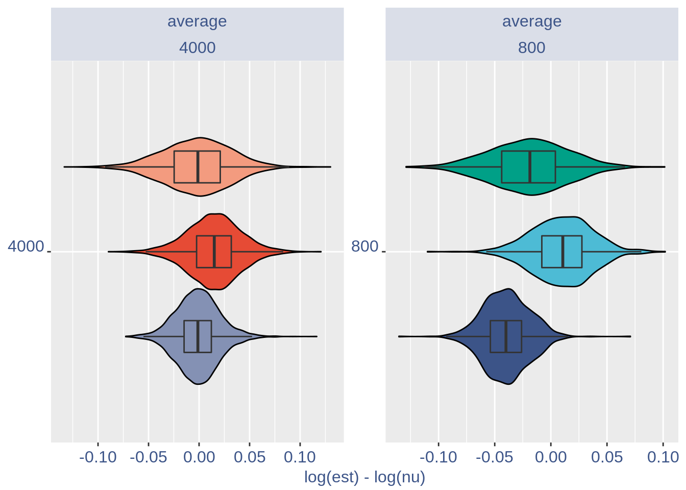

mycolours <- c(
"DSQ_H_4000_average"= "#E64B35FF" ,
"DSQ_H_800_average" = "#4DBBD5FF" ,
"DSQ_M_4000_average" = "#F39B7FFF" ,
"DSQ_M_800_average" = "#00A087FF",
"10X_M_800_average" = "#3C5488FF" ,
"10X_M_4000_average"= "#8491B4FF" ,
"DSQ_H_4000_sqrt" = "#E64B35B2" ,
"DSQ_H_800_sqrt" ="#4DBBD5B2" ,
"DSQ_M_4000_sqrt" = "#F39B7FB2" ,
"DSQ_M_800_sqrt" = "#00A087B2" ,
"10X_M_800_sqrt" = "#3C5488B2" ,
"10X_M_4000_sqrt" = "#8491B4B2"
)
dodge <- position_dodge(width = 0.8)
si = 12
nu= ggplot(nu.tot.plot,aes(x=cells, y=log(est)-log(nu), fill=group)) +
facet_grid(method ~ ., scales = "free")+
#ylim(-0.2,0.2)+
geom_violin(color="black", position = dodge)+
facet_wrap(method ~ cells, scales = "free")+
coord_flip()+
scale_fill_manual(values = mycolours)+
xlab(TeX(" $log \\tilde{\\nu} - log \\nu $ "))+ geom_boxplot(width=0.3, outlier.colour=NA, position = dodge) +
theme(axis.text.x = element_text(size = si, angle = 0, hjust = .5, vjust = .5, face = "plain", colour ="#3C5488FF" ),
axis.text.y = element_text( size = si, angle = 0, hjust = 1, vjust = .0, face = "plain", colour ="#3C5488FF"),
axis.title.x = element_text( size = si, angle = 0, hjust = .5, vjust = 0, face = "plain", colour ="#3C5488FF"),
axis.title.y = element_text( size = si, angle = 0, hjust = .5, vjust = .5, face = "plain", colour ="#3C5488FF"),
legend.title = element_blank(),
strip.background = element_rect(fill="#8491B44C"),
strip.text.x = element_text(size = 12,colour = "#3C5488FF",face = "plain"),
strip.text.y = element_text(size = 12,colour = "#3C5488FF",face = "plain"),
axis.title.y.left = element_blank(),
#legend.key.height = unit(5, "mm"),
legend.text = element_text(color = "#3C5488FF",face ="italic" ),
legend.position = "none") # titl)
nu 
dodge= position_dodge(width = 0.7)
lambda =ggplot(lambda.tot.plot,aes(x=cells, y=log(lambda_est)-log(lambda_real), fill=group)) +
facet_grid(method ~ ., scales = "free")+
ylim(-0.75,0.75)+
geom_violin(color="black", position = dodge)+
facet_wrap(method ~ cells, scales = "free")+
coord_flip()+
scale_fill_manual(values = mycolours)+
xlab(TeX(" $log \\tilde{\\lambda} - log \\lambda $ "))+ geom_boxplot(width=0.2, outlier.colour=NA, position = dodge)+
theme(axis.text.x = element_text(size = si, angle = 0, hjust = .5, vjust = .5, face = "plain", colour ="#3C5488FF" ),
axis.text.y = element_text( size = si, angle = 0, hjust = 1, vjust = .0, face = "plain", colour ="#3C5488FF"),
axis.title.x = element_text( size = si, angle = 0, hjust = .5, vjust = 0, face = "plain", colour ="#3C5488FF"),
axis.title.y = element_text( size = si, angle = 0, hjust = .5, vjust = .5, face = "plain", colour ="#3C5488FF"),
legend.title = element_blank(),
strip.background = element_rect(fill="#8491B44C"),
strip.text.x = element_text(size = 12,colour = "#3C5488FF",face = "plain"),
strip.text.y = element_text(size = 12,colour = "#3C5488FF",face = "plain"),
axis.title.y.left = element_blank(),
#legend.key.height = unit(5, "mm"),
legend.text = element_text(color = "#3C5488FF",face ="italic" ),
legend.position = "right")
lambdaPercentage of a < 0 :
print(a_table)
#> average sqrt
#> DSQ_H_800 29.022439 NA
#> DSQ_H_4000 13.230506 NA
#> DSQ_M_4000 4.913905 NA
#> DSQ_M_800 17.871535 NA
#> 10X_M_800 17.237609 NA
#> 10X_M_4000 4.094951 NAsessionInfo()
#> R version 4.0.4 (2021-02-15)
#> Platform: x86_64-pc-linux-gnu (64-bit)
#> Running under: Ubuntu 18.04.5 LTS
#>
#> Matrix products: default
#> BLAS: /usr/lib/x86_64-linux-gnu/openblas/libblas.so.3
#> LAPACK: /usr/lib/x86_64-linux-gnu/libopenblasp-r0.2.20.so
#>
#> locale:
#> [1] LC_CTYPE=en_US.UTF-8 LC_NUMERIC=C
#> [3] LC_TIME=en_US.UTF-8 LC_COLLATE=en_US.UTF-8
#> [5] LC_MONETARY=en_US.UTF-8 LC_MESSAGES=en_US.UTF-8
#> [7] LC_PAPER=en_US.UTF-8 LC_NAME=C
#> [9] LC_ADDRESS=C LC_TELEPHONE=C
#> [11] LC_MEASUREMENT=en_US.UTF-8 LC_IDENTIFICATION=C
#>
#> attached base packages:
#> [1] stats graphics grDevices utils datasets methods base
#>
#> other attached packages:
#> [1] ggplot2_3.3.3 data.table_1.14.0 latex2exp_0.5.0 matrixStats_0.58.0
#> [5] stringr_1.4.0 scales_1.1.1 COTAN_0.1.0
#>
#> loaded via a namespace (and not attached):
#> [1] sass_0.3.1 tidyr_1.1.2 jsonlite_1.7.2
#> [4] R.utils_2.10.1 bslib_0.2.4 assertthat_0.2.1
#> [7] highr_0.8 stats4_4.0.4 yaml_2.2.1
#> [10] ggrepel_0.9.1 pillar_1.5.1 lattice_0.20-41
#> [13] glue_1.4.2 reticulate_1.18 digest_0.6.27
#> [16] RColorBrewer_1.1-2 colorspace_2.0-0 htmltools_0.5.1.1
#> [19] Matrix_1.3-2 R.oo_1.24.0 pkgconfig_2.0.3
#> [22] GetoptLong_1.0.5 purrr_0.3.4 tibble_3.1.0
#> [25] generics_0.1.0 farver_2.1.0 IRanges_2.24.1
#> [28] ellipsis_0.3.1 withr_2.4.1 BiocGenerics_0.36.0
#> [31] magrittr_2.0.1 crayon_1.4.0 evaluate_0.14
#> [34] R.methodsS3_1.8.1 fansi_0.4.2 Cairo_1.5-12.2
#> [37] tools_4.0.4 GlobalOptions_0.1.2 formatR_1.8
#> [40] lifecycle_1.0.0 ComplexHeatmap_2.6.2 basilisk.utils_1.2.2
#> [43] S4Vectors_0.28.1 munsell_0.5.0 cluster_2.1.1
#> [46] compiler_4.0.4 jquerylib_0.1.3 rlang_0.4.10
#> [49] grid_4.0.4 rjson_0.2.20 rappdirs_0.3.3
#> [52] circlize_0.4.12 labeling_0.4.2 rmarkdown_2.7
#> [55] basilisk_1.2.1 gtable_0.3.0 DBI_1.1.1
#> [58] R6_2.5.0 knitr_1.31 dplyr_1.0.4
#> [61] utf8_1.2.1 clue_0.3-58 filelock_1.0.2
#> [64] shape_1.4.5 stringi_1.5.3 parallel_4.0.4
#> [67] Rcpp_1.0.6 vctrs_0.3.6 png_0.1-7
#> [70] tidyselect_1.1.0 xfun_0.22